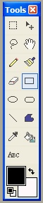
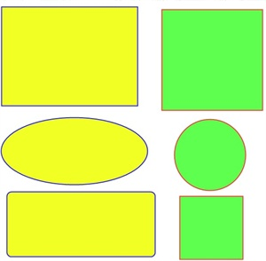

The Rectangle Tool (Tools-->Rectangle), Ellipse Tool (Tools-->Ellipse), and Rounded Rectangle Tool (Tools-->Rounded Rectangle) are very similar, and therefore will be covered together. Notice that the Ellipse Tool button is next to the highlighted Rectangle Tool button. All three tools can either draw either outlines or filled shapes by choosing the appropriate button at the widget menu below the main drop-down menu list.  The
options available are: Draw Outline, Draw Filled
Shape, and Draw Filled Shape With Outline. You can choose this option from the tool
bar.
The
options available are: Draw Outline, Draw Filled
Shape, and Draw Filled Shape With Outline. You can choose this option from the tool
bar.
If you hold down the Shift key while dragging the mouse over the active layer, the drawing will be constrained to a perfect shape.

Pictured to the left is an example of using all three tools. Notice that in the yellow set of shapes, the shift key was not used in conjunction with the mouse dragging. But in the green set of shapes, the shift was held down which created a perfect circle, and two squares (one of which has rounded edges)